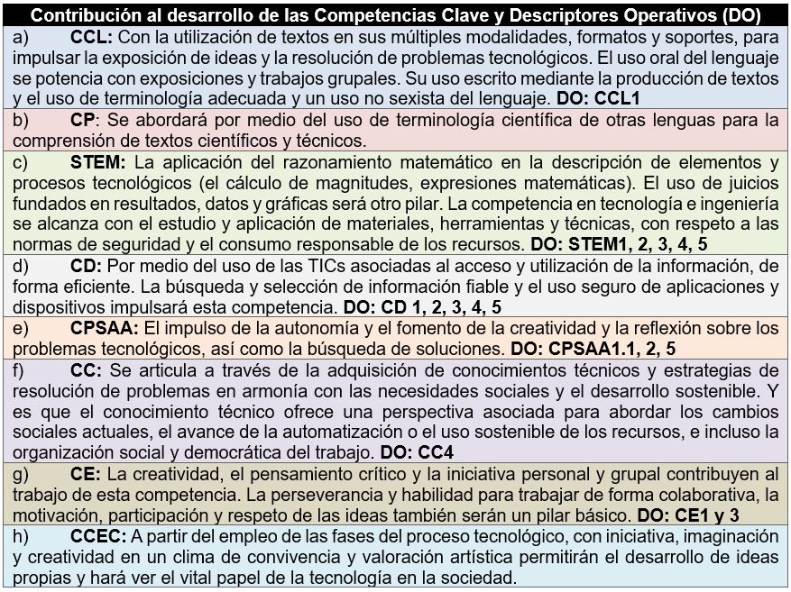
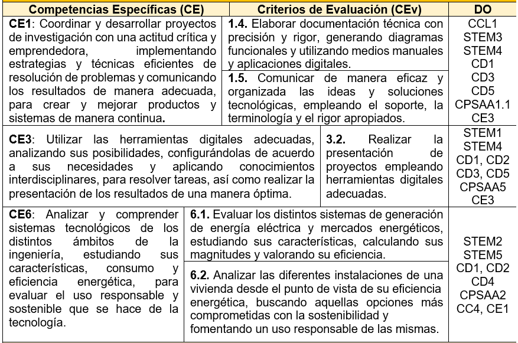
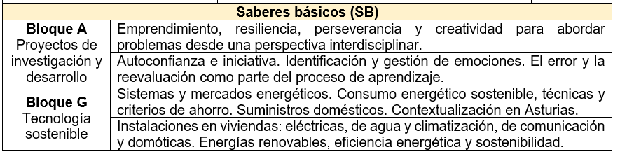
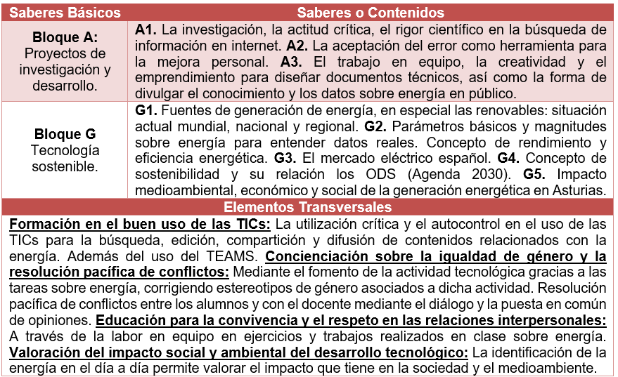

Competencias Clave
Las competencias clave que se trabajan con esta SdA son:

Las competencias clave que se trabajan con esta SdA son:

Según el Decreto 60/2022, las competencias específicas (CE) se definen como los desempeños que el alumnado debe poder desplegar en situaciones de aprendizaje cuyo abordaje requiere de los saberes básicos de cada materia. Son un elemento general para el bachillerato y de unión entre las competencias clave, los saberes básicos y los criterios de evaluación en cada materia, y suponen el segundo nivel de concreción competencial por detrás de los descriptores operativos.
Los criterios de evaluación (CEv) son los referentes que indican los niveles de desempeño esperados en el alumnado en las situaciones o actividades en un momento determinado de su proceso de aprendizaje. Conformarán la referencia para definir el proceso evaluativo del estudiantado, tanto de forma ordinaria como en el caso de ajustes razonables para el que lo precisa.
A continuación se recoge una tabla en la que se pueden observar las Competencias Específicas relacionadas con los Criterios de Evaluación y los Descriptores Operativos:

Los saberes básicos son los conocimientos, destrezas y actitudes que constituyen los contenidos de una materia y cuyo aprendizaje es necesario para la adquisición de las competencias específicas (art. 2 D 60/2022). Todo aquello que el alumnado pone en juego a través de las situaciones de aprendizaje, logrando la adquisición de las competencias clave mediante sus descriptores operativos.
Al margen de los propios saberes de cada materia, de un modo transversal a todas ellas y al currículo, se deben fomentar aprendizajes vinculados con el interés común (desarrollo del espíritu crítico, la sostenibilidad, la convivencia democrática, etc.), vitales para que el alumnado pueda responder con eficacia a los retos del siglo XXI (Objetivos del Siglo XXI y Agenda 2030).
En esta primera tabla se recogen los saberes básicos directamente sacados del currículo autonómico:

Para tener más claros estos saberes, en la siguiente tabla de desarrollan y detallan. Además, se describen los elementos transversales elaborados y concretados a partir de los definidos en la legislación.

Obra publicada con Licencia Creative Commons Reconocimiento Compartir igual 4.0